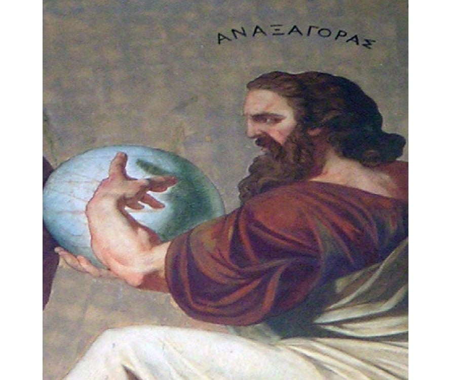

Welcome to the Mathematical World!
Anaxagoras
Pre-Socratic Greek Philosopher (c. 500 BCE – c. 428 BCE)
Anaxagoras was a philosopher from Clazomenae, a city in Asia Minor (modern-day Turkey). He is best known for introducing philosophical and scientific thinking to Athens and for proposing radical ideas about the nature of matter, the mind, and celestial bodies. Living during a time when mythology dominated people's understanding of the world, he sought to explain natural phenomena using reason and observation.
Everything Contains a Part of Everything
One of Anaxagoras' most famous ideas was that everything is made up of infinitely small particles, and that every object contains parts of everything else.
He believed that nothing comes from nothing and nothing disappears into nothing. Instead, things are formed by the mixing and separation of tiny ingredients he called “seeds” or “nous.”
For example, he claimed that:
- Water contains elements of fire, earth, air, and other substances.
- Flesh, bone, hair, and blood all contain parts of each other — the differences arise from which ingredient is dominant.
This was a very early version of what we might now call the theory of matter — long before atoms were discovered.
The Role of Nous (Mind)
Anaxagoras was one of the first to introduce the concept of Nous, Greek for "Mind" or "Intellect." He said that Nous is a universal and infinite force that:
- Initiates motion in the universe
- Organizes chaos into order
- Is separate from matter, but controls it
This was revolutionary because earlier thinkers believed natural processes were random or based on gods. Anaxagoras suggested instead that a rational force (Nous) arranged the universe.
"All things were together; then Mind came and arranged them."
Astronomy and the Nature of Celestial Bodies
Anaxagoras studied the Sun, Moon, and stars, and offered scientific explanations for celestial phenomena, challenging traditional religious beliefs.
Key ideas include:
- The Sun is a red-hot stone, not a god.
- The Moon reflects sunlight and has mountains and valleys.
- Eclipses occur when the Moon passes in front of the Sun (solar eclipse) or enters the Earth's shadow (lunar eclipse).
He was among the first to correctly explain that the Moon’s light is reflected sunlight, not its own light.
He also believed:
- The stars were fiery stones far away from the Earth.
- The Earth was flat and floated on air.
Even though some of his views were incorrect by modern standards, his method of relying on natural causes and reasoning was a big step forward.
Meteorite and Natural Phenomena
A meteorite famously fell in Aegospotami (in Thrace) during Anaxagoras’ lifetime, which he predicted. He used this event to support his idea that celestial bodies were not divine but made of stone and subject to natural laws.
He also studied natural phenomena such as:
- Rainbows
- Halos
- Comets
- Wind and weather patterns
His explanations were not always accurate, but he consistently sought natural causes rather than myths or gods.
Conflict and Legacy
Because of his radical ideas — especially denying the divinity of the Sun — Anaxagoras was charged with impiety and imprisoned in Athens. He was later exiled, likely due to political pressure.
Despite this, his ideas strongly influenced later thinkers such as:
- Socrates
- Plato
- Aristotle
Anaxagoras is often credited as one of the first philosophers to apply scientific thinking to the universe. His legacy lies in his bold use of reason, logic, and natural explanations in an age dominated by mythology.